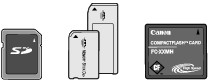
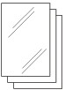
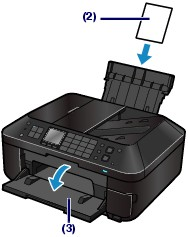
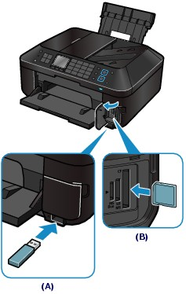
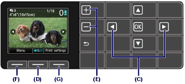
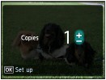
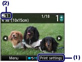
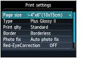
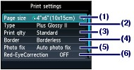
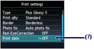

Preview each photo from the memory card or USB flash drive on the LCD, to select and print the desired photo.
This section describes the procedure to print borderless photos on 4" x 6" / 10 x 15 cm photo paper.
For the operation, see the notes and operation procedure described in the reference page.
You need to prepare:
A memory card*1 with saved photos. See Before Inserting the Memory Card.

A USB flash drive*1 with saved photos. See Inserting the USB Flash Drive.
Photo paper for printing. See Media Types You Can Use.

*1 The machine can read up to 2000 photos.
Prepare for printing.
(1) Make sure that the power is turned on.
See Operation Panel.
(2) Load paper.
See Loading Paper.
Here we load 4" x 6" / 10 x 15 cm photo paper in the Rear Tray.
 Note Note
|
(3) Open the Paper Output Tray gently.

Insert a memory card or USB flash drive.
Memory card:
Insert it WITH THE LABELED SIDE FACING TO THE LEFT into the Card Slot.
For the types of memory card compatible with the machine and locations to insert them, see Inserting the Memory Card.
USB flash drive:
Insert it into the Direct Print Port.
See Inserting the USB Flash Drive.
If the memory card or USB flash drive is inserted when the copy standby screen or fax standby screen is displayed, the photo selection screen in Select photo print will appear.
If the photo selection screen does not appear
Press the CARD button.
If the message appears
If photos and documents (PDF files) are saved on the memory card or USB flash drive, the message "Photos and documents (PDF) are saved. Which do you want to print?" will appear.
Select Print photos to print photos, and press the OK button. The photo selection screen in Select photo print will appear.

(A) USB flash drive
(B) Memory card
| Note
For printing the document (PDF file), see Printing PDF Files Saved on the Memory Card / USB Flash Drive.
For details, refer to the on-screen manual: Advanced Guide. * You can print image data from the USB flash drive regardless of the setting in Read/write attribute. |
Select photos to print.
(1) Use the  or
or  button (C) to display a desired photo.
button (C) to display a desired photo.

| Note
|
(2) Use the [+] or [-] button (E) to specify the number of copies.
| Note
|
(3) Repeat the procedures of (1) and (2) to specify the number of copies for each photo.
| Note
 Use the [+] or [-] button to specify the number of copies, and press the OK button to return to the screen in (1). |
Start printing.
(1) Press the right Function button (G) to select Print settings, and confirm the page size, media type, print quality, etc.
Here we confirm that 4"x6" (10x15cm) is selected for Page size and the type of loaded photo paper for Type.
To change the settings, use the  or
or  button to select the item to change, and use the or button to select an option. After confirming or changing the settings, press the OK button to return to the photo selection screen.
button to select the item to change, and use the or button to select an option. After confirming or changing the settings, press the OK button to return to the photo selection screen.
See Basic Operation on the Settings Screen and Changing the Settings.
| Note
|
(2) Confirm the number of sheets to be used for printing the selected photos.


(3) Press the Color button.
The machine starts printing photos.
| Note
For details, refer to the on-screen manual: Advanced Guide.
To remove the USB flash drive, see Removing the USB Flash Drive. |
 Changing the Settings
Changing the SettingsIf you press the right Function button to select Print settings on the photo selection screen, the Print settings screen will appear.
You can use the or button to select the item, such as page size, media type, or print quality, and use the or button to change the setting.
For the setting operation, see Basic Operation on the Settings Screen.
For the print settings of Print all photos, refer to the on-screen manual: Advanced Guide.
 |
 |
(1) Page size
Select the page size of the paper to print: 4"x6" (10x15cm), A4, etc.
(2) Type (Media type)
Select the media type of the paper to print: Plus Glossy II, Glossy, etc.
| Note
|
(3) Print qlty (Print quality)
Select the print quality: High or Standard.
(4) Border
Select bordered or borderless print: Bordered or Borderless.
| Note
|
(5) Photo fix
When Auto photo fix is selected, suitable correction for each photo is made automatically. Select No correction to print photos without correction.
(6) Red-EyeCorrection
Correct red eyes in portraits caused by flash photography.
(7) Print date
Print a photo with shot date.
See Printing Photos with Shot Date.
| Note
|


 may appear on the LCD while reading photos.
may appear on the LCD while reading photos.